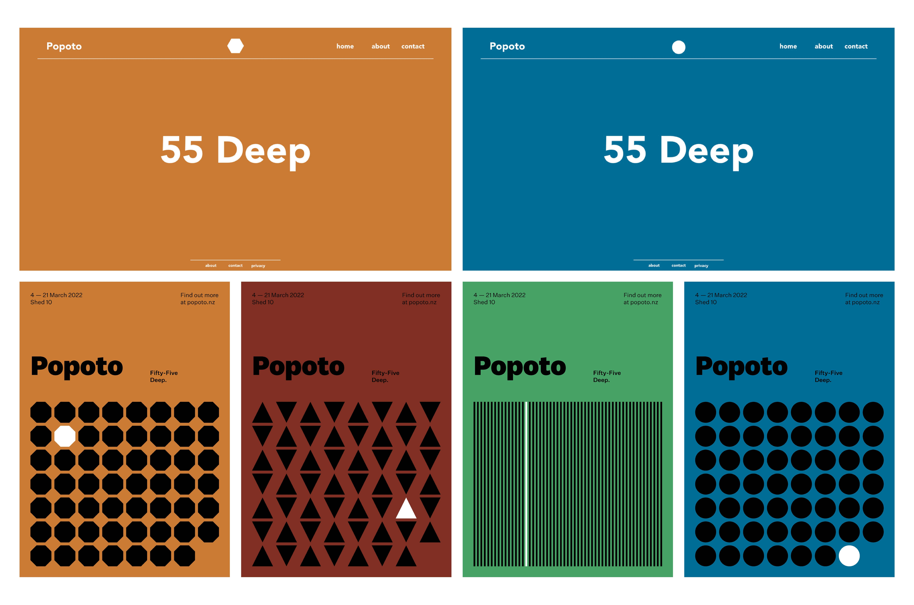
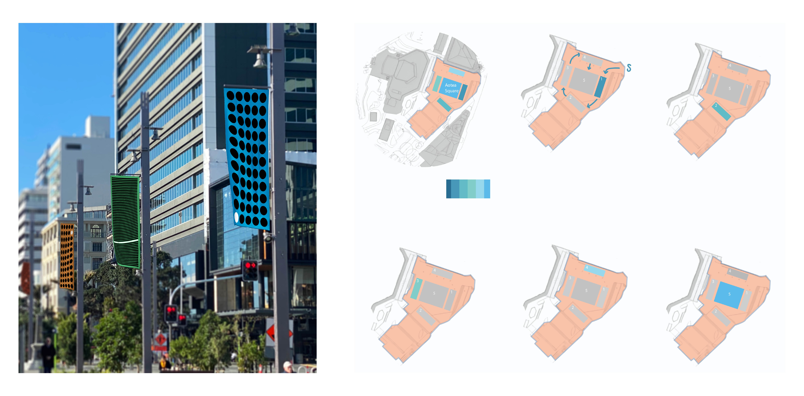

Auckland Art festival Proposal - Popoto
An Interactive Exhibition in colaboration with Auckland Art Festival
Team Aegean
- Jacob, UI & UX Designer
- Daniel, Graphic Designer
- Jeremy, Sound & UX Designer
- Lita Project, Manager and Motion Designer
Project Summary
The goal for this project was to create an interactive experience piece for The Auckland Art Gallery in which we would present our research and ideas to them throuout our time.
My group's idea was to create various rooms in which going through them told the story of the dolphin, Popoto. each room consists of different interactive experiences that portrays points in the dolphins story giving you a connection to Popoto.
Initial Research
Researching into what our group could create was very vital as it needed to be well developed andthought out, having a strong narative that connected not only with the visuals/concept but the people what visited the exhibition as well.
This came with looking into other installation concepts, field reviews into interactive narrative based exhibits, and ways we could intergrate various interactive elements into our own, such as gamification, sensory resposivness and audio.
Brainstorming
When it came to brainstorming ideas, we wanted to come up with many installations as it made it easier to narrow it down after the fact and develop the outstanding ones further.
Spending more time on this part was vital as we didn't want to go to far and mockup an idea that didn't have a strong narrative or concept.
Further Narrative Development
Once we came up with our narrative as explained in the summary, we worked on the user experience and users journey through the exhibit. This also meant we had to work each room's visuals and idea into the narrative to make the whole idea meld together.
The group struggled with this part as some of out ideas got lost in translation and we couldn't settle on a final idea as nothing was sticking right. Going back to brainstorming helped us out of this rut and got us moving forward as this happened at most points of the project as we wanted it to be as sound as possible.
Each room we wanted to show at the exhibit had it's own interaction where you could interact with each part of the room to create different underwater sounds, such as pulling on seaweed.
Mockups
For the wayfinding we created mockups of a website landing page, posters/bill stickings for bus stops and city areas, flags using the same poster designs and layout mockups for where the rooms would be in regards to Aotea Square.
 Final Artefact - Pitch Presentation
What we came out with was a presentation that was shown to many people in the Auckland Arts Festival Team, it shows our initial conceptualisation of our project and what it means to us, our narrative into the world of Popoto the dolphin pup and our mockups of each room.